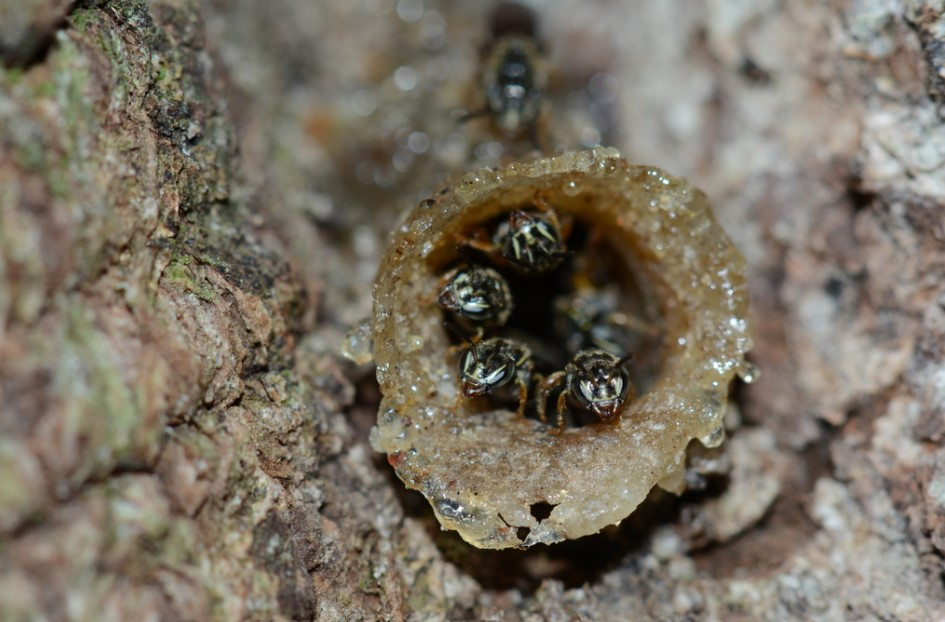
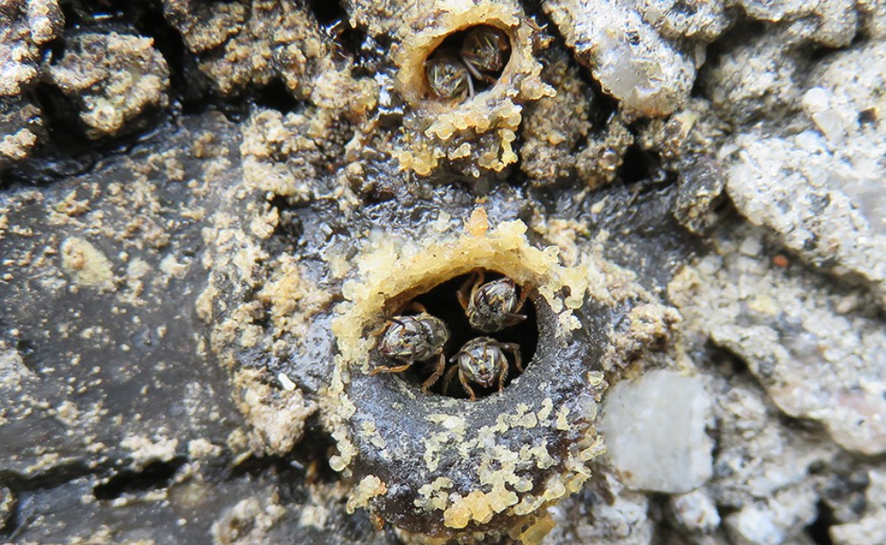

Comportamentos e Hábitos
Organização social: As abelhas mirins são altamente sociais, vivendo em colônias organizadas com uma hierarquia clara, composta por uma rainha, operárias e zangões (machos). Cada abelha tem um papel específico no funcionamento da colônia.

Defesa e comportamento pacífico: Diferente das abelhas com ferrão, as mirins são mais pacíficas. Elas não picam, mas podem morder se sentirem ameaçadas.
A mordida das abelhas mirins geralmente não causa danos significativos às pessoas. Como elas são abelhas sem ferrão, sua principal forma de
defesa é morder, mas suas mandíbulas são pequenas e sua mordida é inofensiva para a maioria dos seres humanos. Pode haver uma leve sensação de desconforto,
mas não costuma resultar em dor significativa ou em reações adversas, como ocorre com o veneno de abelhas que picam.

Polinização: São polinizadoras eficazes de várias plantas nativas e cultivadas, desempenhando
um papel vital no ecossistema e na agricultura. Elas preferem flores pequenas e coletam pólen e néctar para sustentar a colônia.
voo e forrageamento: Por serem pequenas, têm um alcance de voo mais curto em comparação a outras abelhas sem ferrão. Elas preferem forragear
em flores menores e estão adaptadas a climas tropicais e subtropicais.
Ninho: Elas constroem seus ninhos em ocos de árvores ou estruturas protegidas, e podem ser criadas em caixas racionais na meliponicultura
. O interior do ninho é organizado em potes de mel, potes de pólen e células de cria.